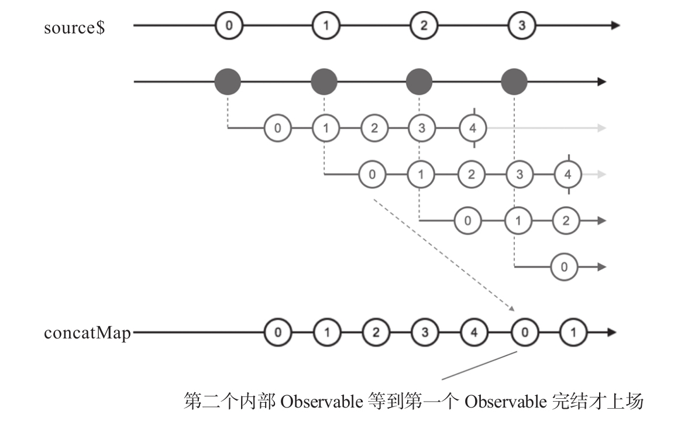
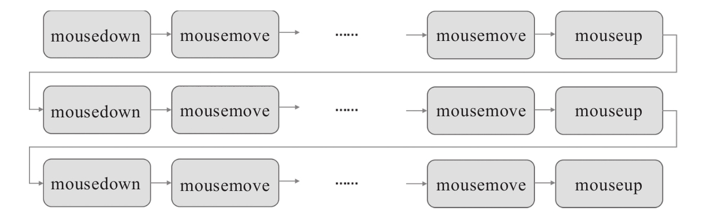

把上面使用map的代码改为使用concatMap，如下所示：
const source$ = Observable.interval(200); const result$ = source$.concatMap(project);
产生的弹珠图如图8-12所示，我们加上了隐藏在concatMap过程中产生高阶Observable对象的部分，这样更容易看清楚发生了什么。
可以看到，第一个内部Observable对象中的数据被完整传递给了concatMap的下游，但是，第二个产生的内部Observable对象没有那么快处理，只有到第一个内部Observable对象完结之后，concatMap才会去订阅第二个内部Observable，这样就导致第二个内部Observable对象中的数据排在了后面，绝不会和第一个内部Observable对象中的数据交叉。实际上，第二个内部Observable对象的数据在图8-12弹珠图中只显示了0和1，后面的数据都挤在弹珠图之外了。

图8-12 concatMap的弹珠图
concatMap适合处理需要顺序连接不同Observable对象中数据的操作，有一个特别适合使用concatMap的应用例子，就是网页应用中的拖拽操作。
在网页应用中，拖拽操作就是用户的鼠标在某个DOM元素上按下去，然后拖动这个DOM元素，最后松开鼠标这整个过程，而且用户在一个网页可以做完一个拖拽动作之后再做一个拖拽动作，这个过程是重复的，拖拽涉及的事件包括mousedown、mousemove和mouseup，所以拖拽功能控制得好的关键，就是要做好这几个事件的处理。
使用传统的方式，基本上就是这么实现拖拽，当mousedown事件发生的时候，用一个状态变量标识现在开始进入“拖拽状态”，然后监听mousemove事件和mouseup，每一个mousemove事件引发一个事件处理函数，当mouseup事件发生时，改变状态变量标记现在离开“拖拽状态”，等待下一次mousedown事件的发生。
各个事件的顺序如图8-13所示。

图8-13 拖拽动作中的时间顺序
在图8-13中，每一行代表一次完整的拖拽过程，以mousedown开始，以mouseup结束，中间全是mousemove。如果把mousemove的序列看作是一个Observable对象，整个过程可以看作是一个高阶Observable对象，其中每一个内部Observable对象由mousedown事件引发，每一个内部Observable对象就是以mouseup结束的mousemove数据序列，而且，每一行都是首尾相接的，不存在数据的交叉。
这么看来，这个问题用concatMap来解决实在太完美了，接下来就介绍用concat-Map来实现对DOM元素的拖拽。
提示
完整的代码在代码库chapter-08/transform/src/concatMap/drag_drop.html文件中可以找到。
网页中存在一个id为box的元素，这就是被拖拽的对象，如下所示：
<div id="box"></div>
我们想要实现的就是用户可以在box元素上用鼠标拖动它，这个过程中需要涉及一些多box元素的事件处理，以RxJS的思维方式，不要只看到一个个独立的事件，而是要把相关所有事件作为一个Observable对象来看待，对应的代码如下：
const box = document.querySelector('#box');
const mouseDown$ = Rx.Observable.fromEvent(box, 'mousedown');
const mouseUp$ = Rx.Observable.fromEvent(box, 'mouseup');
const mouseOut$ = Rx.Observable.fromEvent(box, 'mouseout');
const mouseMove$ = Rx.Observable.fromEvent(box, 'mousemove');
可以看到，除了获得mousedown、mousemove和mouseup的事件数据流，我们也获得了mouseout的事件数据流，这是因为实际中用户完全有可能鼠标的动作太快，box元素没来得及移动鼠标就移出去了，所以mouseout事件也需要考虑。
接下来利用concatMap来实现拖拽的数据流控制，如下所示：
const drag$ = mouseDown$.concatMap((startEvent)=> {
const initialLeft = box.offsetLeft;
const initialTop = box.offsetTop;
const stop$ = mouseUp$.merge(mouseOut$);
return mouseMove$.takeUntil(stop$)).map(moveEvent => {
return {
x: moveEvent.x - startEvent.x + initialLeft,
y: moveEvent.y - startEvent.y + initialTop,
};
});
});
其中，drag$利用concatMap产生拖拽事件的数据流，最终drag$产生的数据都是包含x和y字段的对象，代表box应该移动到的坐标位置。
每当用户在box元素上按下鼠标时，mouseDown$就产生一个元素，对应触发concatMap的函数参数，在这个函数中，首先记录下当前box元素的位置，存在initialLeft和initialTop变量中；然后，concatMap的函数参数返回的是mouseMove$中的数据；最后，利用takeUntil，实际上只返回了从这一次mousedown开始到下一次mouseup之间的mousemove事件，然后对每一个mousemove事件进行计算，产生box移动位置的x和y。
在这里可以看到转化类concatMap和过滤类takeUntil的组合，双剑合璧，威力无穷。
最后，只需要订阅drag$，根据drag$产生的数据修改box元素的位置就可以了，如下所示：
drag$.subscribe(event => {
box.style.left = event.x + 'px';
box.style.top = event.y + 'px';
});
这个拖拽的功能，使用RxJS来编写代码量很少，可以看出，对于适合用数据流来思考的问题，RxJS是非常简洁的解决办法。